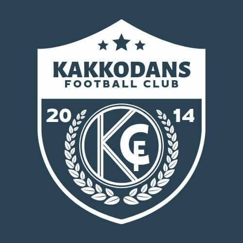

Kakkodu, Punalur | Established 2014
Kakkodans FC was founded in 2014 in Kakkodu, Punalur, by a group of passionate football lovers who shared a common dream — to build a strong football culture in the village and represent Kakkodu in competitive tournaments. What began as a small gathering of young players united by their love for the game soon grew into an organized football club with determination and ambition.
The early years were filled with challenges. The team experienced several defeats while learning and adapting to the competitive nature of the game. In addition to on-field struggles, the club also faced opposition from individuals who attempted to discourage or stop the game. However, the players and supporters of Kakkodans FC remained determined and stood together with resilience and unity.
Through dedication, hard work, and a continuous desire to improve, the team gradually developed its skills and competitive spirit. Over the years, Kakkodans FC began participating in various local tournaments and football events, proudly carrying the name of Kakkodu to different venues across the region. The journey has been one of perseverance, learning, and steady progress.
Today, Kakkodans FC has established itself as one of the prominent football teams in the Punalur area. A significant milestone in the club’s journey came in 2026 when the team secured the Runner-Up position in the prestigious Keralolsavam tournament. This achievement stands as a testament to the dedication, teamwork, and unwavering passion of the players and supporters who have contributed to the club’s growth.
Kakkodans FC continues its journey with the same passion that inspired its formation — striving to develop talented players, compete at higher levels, and proudly represent the spirit and pride of Kakkodu through football.
Vision:
To build a strong football culture in Kakkodu and become a respected football club that represents the village with pride in regional and state-level competitions.
Mission: